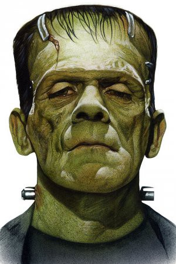
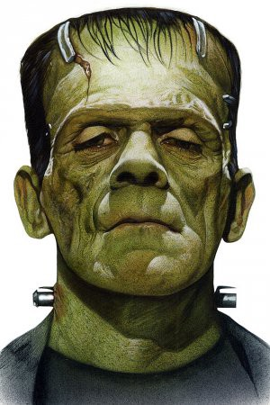

A Origem dos zumbis
Os zumbis tem origem nas crenças do vodu, que para eles os zumbis eram trabalhadores controlados por um feiticeiro. Zumbi também é uma gíria utilizada quando as pessoas dizem que dormiram pouco durante a noite, e estão se sentindo um zumbi, fazendo relação às criaturas que passam a noite toda percorrendo a cidade.

 

Principais zumbis da história
- Frankenstein
- Nemesis
- um morto muito louco